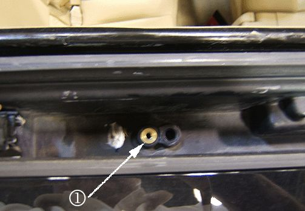
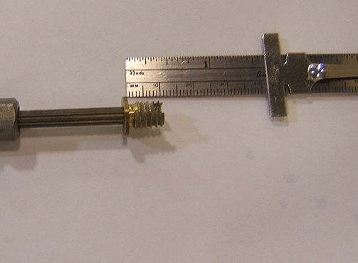
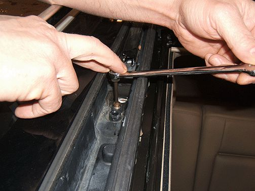
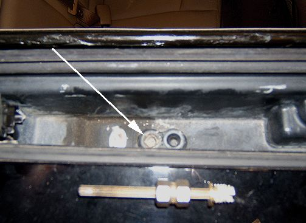
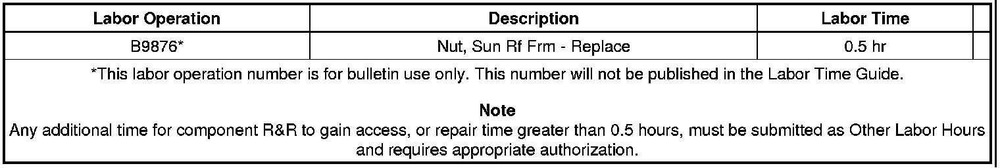

Body - Creak Or Pop Noise Coming from Sunroof Area
TECHNICALBulletin No.: 09-08-67-008
Date: April 06, 2009
Subject:
Creak or Pop Noise Coming from Sunroof Area (Replace Nut Insert)
Models:
2004-2009 Cadillac SRX
Condition
Some customers may comment on a creak or popping noise coming from the sunroof area.
Cause
Whether occurring during the original manufacturing process, or a previous repair, this condition may be caused by cross-threading or stripping of a brass nut insert used to secure components to the sunroof Sheet Metal Compound (SMC) frame. Not using due care, or over torquing upon installation of the component fasteners, may lead to such a condition.
Correction
1. If necessary, remove the sunroof component from the area of the stripped nut insert.

2. Remove the nut insert (1) from the sunroof SMC frame. If unable to remove by hand, follow the steps below:
Caution
Failure to limit the drill depth to the dimension noted below could result in damage to the sunroof module or components.

1. Using a 3/16 inch (4.8 mm) drill bit, drill downward through the center of the nut insert a depth LESS THAN 10 mm.

2. Using a #2 bolt extractor, remove the nut insert from the sunroof frame.

3. Remove all dirt and debris from the nut insert hole.
Important
Inspect the hole and surrounding area for any unseen damage, or fractures in the SMC frame material. If significant damage is evident, DO NOT repair.
4. Apply two part epoxy (obtained locally) into the cleaned nut insert hole.
5. Install an M5 x 8 threaded allen bolt, or equivalent, into the new replacement nut insert. Thread the bolt to the end of the nut insert.
6. Thread the new nut insert into the epoxied hole. Ensure that the nut insert threads in straight, vertically.
7. Allow the new nut insert to cure for a minimum of 30 minutes (or follow manufacturer's guidelines), then remove the bolt from the nut insert.
8. Reinstall any original component removed.
Parts Information
Warranty Information

For vehicles repaired under warranty, use the table above.

Disclaimer